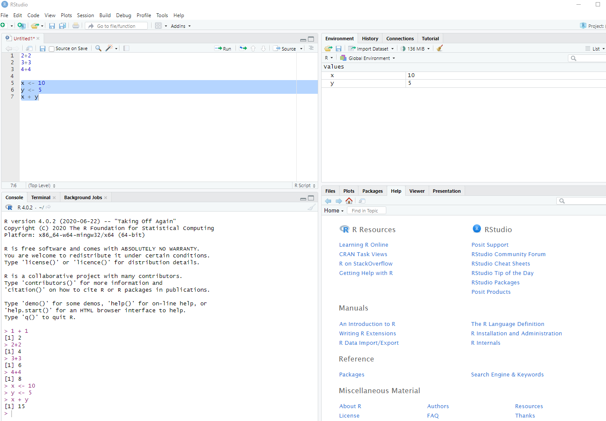
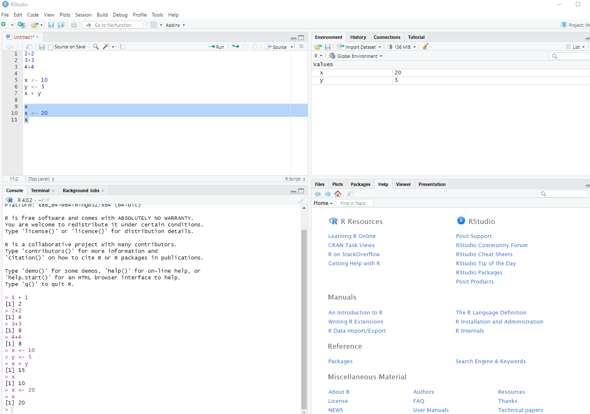

This lesson is a part of the Introduction to R for Air Quality Data Science. The sections below provide a basic introduction to R, including how to install and set up R and RStudio, an overview of R syntax, and how to perform simple operations.
What is R?
R is a free, open-source computing language. It was originally written by statisticians for doing statistical analysis in academia. In recent years it has become more widely used in many industries for performing a variety of data science tasks such as:
- reading and writing files,
- data transformation,
- graphic visualization,
- geographic mapping,
- and predictive modeling.
Why Use a Programming Language?
R is one of several programming languages that can be used for data science, including Python and Julia. They each have advantages and disadvantages, but they are all powerful tools for data science. These high-level languages give you access to modern algorithms for processing large amounts of data in a few lines of code.
Many data analysis tasks can be accomplished with spreadsheets and other business intelligence (BI) tools such as Looker and Power BI. When should you move beyond BI tools and use a high-level programming language like R? Below are a few scenarios where a language like R is more advantageous than a BI tool.
- If you cannot access data easily in your BI tool, R can read just about any data source.
- If you need to download, save, or otherwise process a large number of files, R can automate those tasks in a way that BI tools cannot.
- Custom data transformations that are not possible in BI tools can be done with R.
- Custom data visualizations that are not available in BI tools can be done with R.
- Predictive modeling that is not available in BI tools, or only in a rudimentary way, can be done in R.
BI tools are more advantageous if you need enterprise wide dashboards, or tools that are more easily accessible to a wider audience. If there are few occasions where you need custom visualizations or transformations, or if you do not need automation in your work, you may not need to learn a programming language.
Basic Math
Open up a script if you haven’t already (“File” -> “New File” -> “R Script”). Try some math by either typing the lines below or copying and pasting the lines into your script.
10 + 5## [1] 1510 - 5## [1] 510 * 5## [1] 5010 / 5## [1] 210 ^ 5## [1] 1e+05Remember, to run the lines, highlight your code and click the “Run” button on the toolbar of the script panel. Below is a table of the math operators in the R language.
|: — | — | — | | + | addition | 2 + 2 | | - | subtraction | 2 - 2 | | * | multiplication | 2 * 2 | | / | division | 2 / 2 | | ^ | exponentiation | 2 ^ 2 |
Order of Operations
R follows the usual order of arithmetical operations and uses parentheses for grouping operations. Run the two lines of code below and you can see the different values that are returned.
10 - 3 / 5(10 - 3) / 5Comments and Code Blocks
To write a comment in your script that will not be evaluated, type
# in front of your comment. The text after #
will not be evaluated. There is no multi-line commenting in R, so every
comment line must begin with the # character.
Run all of the code below and see what gets returned in the R console (bottom left panel in RStudio).
# Full line comment
5^2 # partial line comment## [1] 25In the example above and the previous section, you can see the R code
and its output. The code blocks with output look like this, with
1+1 being the R code and ## [1] 2 being the
output:
1+1## [1] 2However, in the R console the code and output would look like this:
> 1 + 1
[1] 2The R code in code blocks do not show the > part of
the console, called the prompt, and the output block places two comment
marks ## before the output. This is to make it possible to
copy and paste the text into your R console and run it without causing
an error.
Variables
A variable is a letter or combination of alphanumeric characters that
is used to store data. To create a variable in R, use the less-than
character with the dash to create an arrow symbol pointing left
<-. Below, the variables x and
y are created by assigning some numbers to them.
x <- 10
y <- 5
x + y## [1] 15In RStudio, you will see the variables we created in the top right panel.

If you’ve already created a variable, you can replace the value with another value.
x## [1] 10x <- 20
xIn the top right panel you can see that the number stored in the
variable x has changed.

There are 3 important rules to remember when creating variable names:
- You can’t start your variable name with a number.
- You can’t use spaces or special characters ($,%,#,-). Periods
.and underscores_are ok. - Capitalization DOES matter in R. That is, R will
consider
yandYto be different variables.
Try running the following code and you will see that in your global environment there are two different objects listed.
y <- 5
Y <- 10Data Types
R has three main data types:
|: — | — | — | | character | letters and words | z,
red, H2O | | numeric | numbers |
1, 3.14, log(10) | | logical |
binary | TRUE, FALSE |
The character type requires single or double quotes. The
numeric type must be unquoted numbers, and the full-caps logical values
TRUE and FALSE must also be unquoted.
Grouping Data
There are several ways to store groups of data to make them easier to work with:
- A vector stores multiple values of the same type (e.g. all numeric values).
- A list stores multiple values of different types (e.g. some numbers and character values).
- A matrix is a table of values with only one data type.
- A data frame is a table of values that can have columns with different data types (e.g. a numeric column and a logical column).
Vectors
A vector variable can contain only one type of data (numeric,
character, or logical). We use c() to create vectors.
x <- c(1, 2, 3, 4, 5)
x## [1] 1 2 3 4 5fruit <- c("apples", "bananas", "oranges")
fruit## [1] "apples" "bananas" "oranges"If you try to type in text without using quotations marks for character values (either single or double quotes), then R will throw an error. Try running the code below.
fruit <- c(apples, bananas, oranges)R will interpret the text without quotes as the names of variables.
Since we don’t have any variables named apples,
bananas, or oranges, R can’t find them and it
returns an error. The members of a vector can be accessed by using
single brackets [ ]. For example, to print the 3rd member
of the fruit vector, you can use the single bracket with
the number 3:
fruit[3]## [1] "oranges"Lists
Lists are like vectors but can contain any mix of data types. We use
list() to create a list variable.
x <- list("Benzene", 1.3, TRUE)
x## [[1]]
## [1] "Benzene"
##
## [[2]]
## [1] 1.3
##
## [[3]]
## [1] TRUEWhen a list is printed to the console, you will see double brackets
[[ ]] with the index number inside. In the example above,
the numeric value 1.3 is the second value in the list, so
it is shown below the double bracket [[2]]. You can access
the second value by using the double brackets on the list.
x[[2]]## [1] 1.3Lists can also contain vectors and other lists.
my_vector <- c(1, 2, 3)
my_list <- list("Benzene", 1.3, TRUE)
y <- list(TRUE, my_vector, my_list)
y## [[1]]
## [1] TRUE
##
## [[2]]
## [1] 1 2 3
##
## [[3]]
## [[3]][[1]]
## [1] "Benzene"
##
## [[3]][[2]]
## [1] 1.3
##
## [[3]][[3]]
## [1] TRUEIn this example, you can use two double brackets to access the value
1.3 by selecting the 3rd member of the list y
and the 2nd member of the list my_list:
y[[3]][[2]]## [1] 1.3Data Frames
Data frames are data tables in R. We use data.frame() to
create a data frame of vectors of the same length. In the example below,
we create three vectors of the same length and use them to create a data
frame.
pollutant <- c("Benzene", "Toluene", "Xylenes")
concentration <- c(1.3, 5.5, 6.0)
carcinogen <- c(TRUE, FALSE, FALSE)
my_data_frame <- data.frame(pollutant, concentration, carcinogen)
my_data_frameThe output above shows a table with the vector variable names as column names, and the vector values below the respective column name. If you try to create a data frame where the vectors are not all the same length, you will get an error.
pollutant <- c("Benzene", "Toluene")
concentration <- c(1.3, 5.5, 6.0)
carcinogen <- c(TRUE, FALSE, FALSE)
my_data_frame <- data.frame(pollutant, concentration, carcinogen)Further Reading
- For a comprehensive introduction to data science using R, see R For Data Science, 2nd Edition.
- For a good introduction to R programming, see Hands on R Programming.
Exercises
Exercise 1
Add 25 and 75 in R.
# Your code here# You can add two numbers directly using the `+` operator.# Simply type `25 + 75` in the R console to perform the addition.25 + 75Exercise 2
Create an R variable x that stores the value 10.
# Your code here# Use the assignment operator `<-` to assign a value to a variable.# To create a variable `x` with the value 10, use `x <- 10`.x <- 10Exercise 3
Create a vector v that contains the numbers 1 through
5.
# Your code here# Use the `c()` function to combine multiple values into a vector.# You can create a vector of consecutive numbers using `c(1, 2, 3, 4, 5)` or the shorthand `1:5`.v <- c(1, 2, 3, 4, 5)Exercise 4
Create a list l that contains the number 5, the string
‘apple’, and the logical value TRUE.
# Your code here# Use the `list()` function to create a list that can contain elements of different types.# To create a list with a number, a string, and a logical value, you can use `list(5, 'apple', TRUE)`.l <- list(5, 'apple', TRUE)Exercise 5
Create a data frame df with two columns,
name and age. Use the names ‘Alice’, ‘Bob’,
and ‘Charlie’ and give them each an age.
# Your code here# Use the `data.frame()` function to create a data frame.# To create a data frame with `name` and `age` columns, define each column as a vector and use them as arguments in the `data.frame()` function.df <- data.frame(name = c('Alice', 'Bob', 'Charlie'), age = c(25, 32, 28))Exercise 6
Create a numeric vector nums with the values 10, 20, and
30 and add 5 to each element of the vector.
# Your code here# You can create a vector using the `c()` function.# You can create a vector using the `c()` function.
# `nums <- c(10, 20, 30)`# To add a number to each element of a vector, you can simply use the `+` operator with the vector and the number.# To add a number to each element of a vector, you can simply use the `+` operator with the vector and the number.
# `nums + 5`nums <- c(10, 20, 30)
nums + 5Next Lesson
You have completed Lesson . Click the button below to mark it as complete and move on to the next lesson.